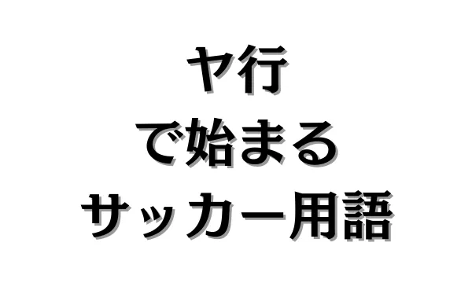

ヤ行で始まるサッカー用語


1. ヤで始まるサッカー用語。
2. ユで始まるサッカー用語。
ユース【★★】
ユースとは、世代やカテゴリを表す言葉の一種で、高校生年代やJクラブのユースチームのことを指します。
高校生年代のことをまとめてユース世代と言ったり、高体連と区別するためにJユースというカテゴリで分けたりします。
また、高校生年代をユースというのに対して中学生年代をジュニアユース、小学生年代をジュニアと言ったりします。
ユーティリティー【★★★】
ユーティリティーとは、選手の能力を表す言葉の一種で、多機能性や柔軟性を持つ選手を指します。
特に複数ポジションをこなせる選手のことを指し、時にはSB（サイドバック）、時にはMF（ミッドフィルダー）として出場したりします。
このユーティリティー性を持つ選手は、相手や試合状況によって役職を変化させることができるため、チーム内で重宝されます。